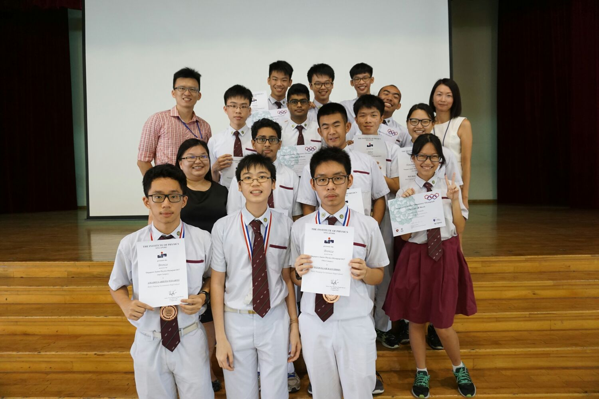

Mr. Simon Julian Lauw
The God of Computer Science

Mr Simon, first from the last row, recieving an award for his stellar performance in the Singapore Physics Olympiad
Here's a time line of Mr. Simon's life:
- 2016 - Won the National Science Challenge, against rivals such as SST and Nanyang Girls High
- 2017 - Completed his GCE O Levels at Bukit Panjang Government High, attaining a total of ? distinctions
- 2019 - Completed his GCE-A Levels at Nanyang Junior College, attaining a total of 8 distinctions
- 2020 - Enrolled in the National University of Singapore as a Computer Science Undergraduate
- 2021 - Took up an internship at SEA as an Andriod Engineer, was tasked with improving chat media view and creating an internal library for machine learning-based QR code scanner
- 2022 - Took up an internship at Nethermind as a Full Stack Web3 Developer Intern
"Simon's life and achievement are testimony to the far-reaching contribution that one man's towering intellect, persistence and scientific vision can make to human peace and progress."
-- Indian Prime Minister Abhijeet Chowdary